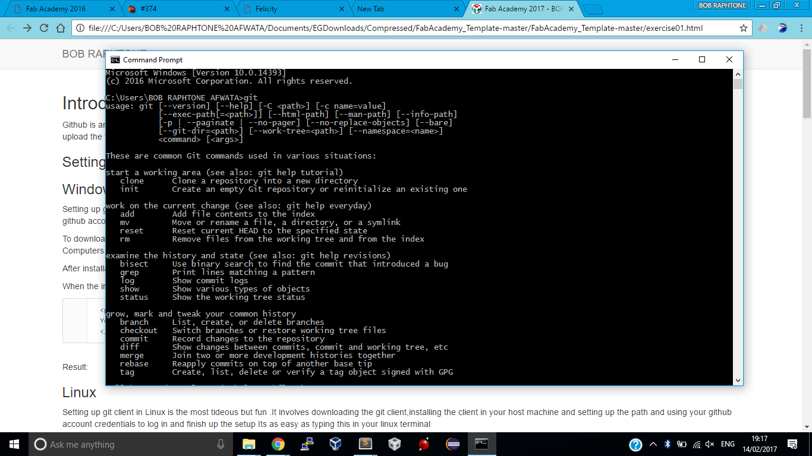

Github is an online service that helps software developers,designers,engineers to share and work on projects remotely Through github one can work on any kind of project and then upload the files online for others to view and edit .Git is a client (Software installed locally on your machine) which is used to access the service
Setting up git client in windows is the most tideous but fun .It involves downloading the git client,installing the client in your host machine and setting up the path and using your github account credentials to log in and finish up the setup
To download Git navigate to this Url ,Download the Git.exe that matches with your Opearating system ie 64 or 32 bit although a 32bit exe will work fine for both 32 and 64 bit Computers
After installation remember to add the path variable so it can be used from any part of your computer .
When the installation is done open up your cmd and type git and it will show you its ready to be used .

Setting up git client in Linux and MacOs is very easy.Fire up your terminal and tye the following
sudo apt-get install git
Git is a client /software that is used to access various services in github. Using Github can be a challenge but once mastered it can be very useful for both engineers,designers,programmers or developers etc. To use git and github one needs to create a user account online .This is as easy as going to www.github.com After creating an account one needs to sign in and create a repository.A repository or repo as devs call it is like a container/ folder where all your files will be stored .
My Final Project is a cool African made Mat that interacts with the user and monitors what Goes